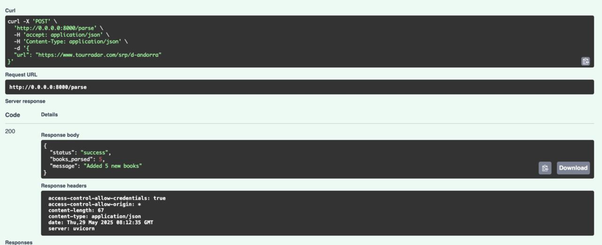
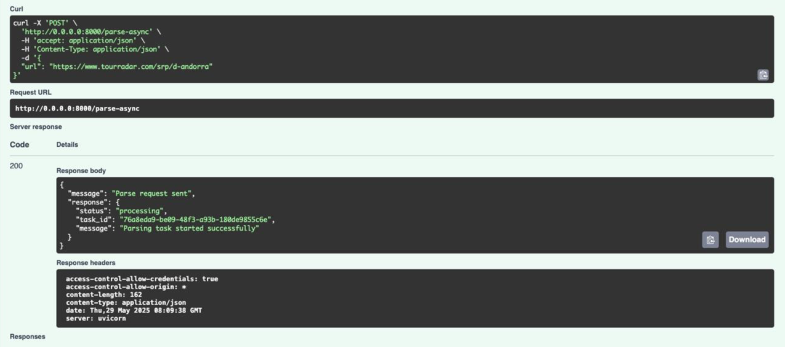
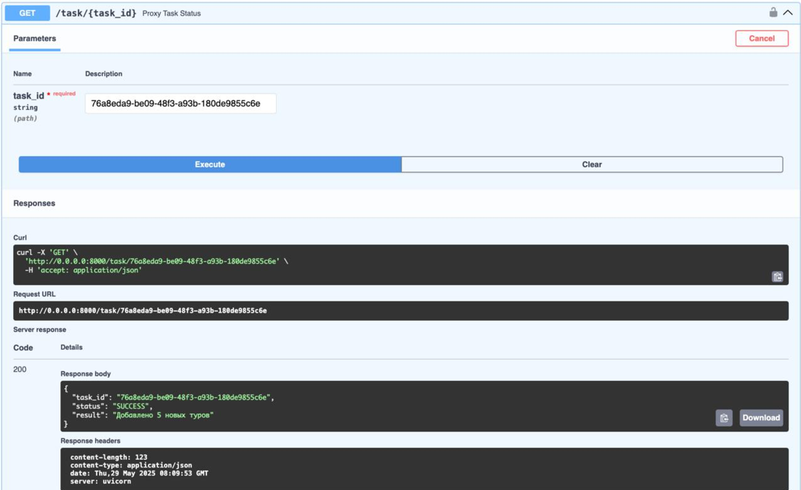
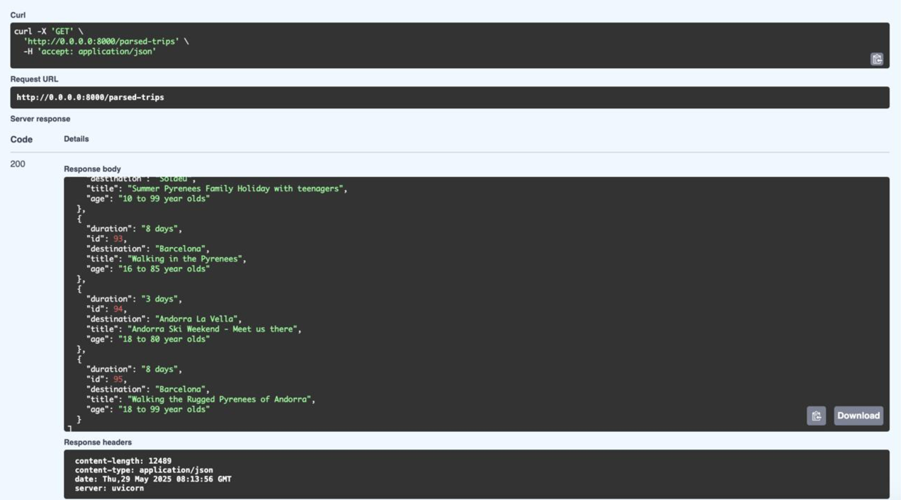

Лабораторная работа 3: Упаковка FastAPI приложения в Docker, Работа с источниками данных и Очереди
Подзадача 1: Упаковка FastAPI приложения, базы данных и парсера данных в Docker
Вызов парсера по http:
@app.post("/parse")
async def parse(data: InputUrl):
try:
count = await parse_and_save_tours(data.url)
return {
"status": "success",
"books_parsed": count,
"message": f"Added {count} new tours"
}
except Exception as e:
import traceback
traceback.print_exc()
logger.error(f"Exception in /parse: {str(e)}")
raise HTTPException(status_code=500, detail=str(e))
Dockerfile для упаковки FastAPI приложения и приложения с паресером: main_app/Dockerfile
FROM python:3.13-slim
WORKDIR /app
ENV PYTHONPATH=/app
COPY requirements.txt .
RUN pip install --no-cache-dir -r requirements.txt --index-url=https://pypi.tuna.tsinghua.edu.cn/simple
COPY . .
CMD ["uvicorn", "main_app.main:app", "--host", "0.0.0.0", "--port", "8000"]
parser/Dockerfile
FROM python:3.13-slim
WORKDIR /app
COPY requirements.txt .
RUN pip install --no-cache-dir -r requirements.txt --index-url=https://pypi.tuna.tsinghua.edu.cn/simple
COPY ./app ./app
CMD ["uvicorn", "app.main:app", "--host", "0.0.0.0", "--port", "9000"]
Создание Docker Compose файла:
services:
db:
image: postgres:17
container_name: db
environment:
POSTGRES_USER: ${DB_ADMIN}
POSTGRES_DB: ${DB_NAME}
POSTGRES_HOST_AUTH_METHOD: trust
env_file:
- .env
ports:
- "5432:5432"
volumes:
- postgres_data:/var/lib/postgresql/data
healthcheck:
test: ["CMD-SHELL", "pg_isready -U postgres"]
interval: 5s
timeout: 5s
retries: 5
networks:
- trip_network
celery:
build:
context: ./parser
container_name: celery-worker
command: celery -A app.celery_worker.celery_app worker --loglevel=info
depends_on:
- redis
- db
env_file:
- .env
volumes:
- ./parser/app:/app/app
environment:
- PYTHONPATH=/app
networks:
- trip_network
redis:
image: redis:7
container_name: redis
ports:
- "6379:6379"
networks:
- trip_network
app:
build:
context: ./main_app
dockerfile: Dockerfile
container_name: app
ports:
- "8000:8000"
depends_on:
db:
condition: service_healthy
env_file:
- .env
environment:
- DB_ADMIN=${DB_ADMIN}
- DB_HOST=db
- DB_PORT=${DB_PORT}
- DB_NAME=${DB_NAME}
volumes:
- ./main_app:/app/main_app
networks:
- trip_network
parser:
build:
context: ./parser
dockerfile: Dockerfile
container_name: parser
depends_on:
db:
condition: service_healthy
app:
condition: service_started
env_file:
- .env
volumes:
- ./parser:/app/parser
networks:
- trip_network
volumes:
postgres_data:
external: true
name: postgres_data
networks:
trip_network:
driver: bridge
Создание файла docker-compose.yml для управления оркестром сервисов, включающих FastAPI приложение, базу данных и парсер данных.
celery – воркер Celery для асинхронных задач. Зависит от redis и db. redis – сервер Redis для кеширования или брокера сообщений Celery.
Подзадача 2: Вызов парсера из FastAPI
Эндпоинт в FastAPI для вызова парсера, который будет принимать запросы с URL для парсинга от клиента, отправлять запрос парсеру (запущенному в отдельном контейнере) и возвращать ответ с результатом клиенту.
@router.post("/parse")
async def parse_url(request: RequestURL):
try:
async with httpx.AsyncClient() as client:
response = await client.post(
f"http://parser:9000/parse",
json={"url": request.url},
timeout=30.0
)
response.raise_for_status()
return response.json()

Подзадача 3: Вызов парсера из FastAPI через очередь
@router.post("/parse-async")
async def parse_url_async(request: RequestURL):
try:
async with httpx.AsyncClient() as client:
response = await client.post(
f"http://parser:9000/parse-async",
json={"url": request.url},
timeout=30.0
)
response.raise_for_status()
return {"message": "Parse request sent", "response": response.json()}
except httpx.HTTPStatusError as e:
raise HTTPException(
status_code=e.response.status_code,
detail=f"Parser service error: {e.response.text}"
)
except Exception as e:
raise HTTPException(
status_code=500,
detail=f"Internal server error: {str(e)}"
)

Создается объект AsyncResult, который связывается с задачей Celery по её task_id. celery_app – это экземпляр Celery, который управляет задачами. Celery выносит парсинг в фоновый процесс, а Redis помогает управлять очередями задач и результатами.@router.get("/task/{task_id}")
async def proxy_task_status(task_id: str):
try:
async with httpx.AsyncClient() as client:
response = await client.get(f"http://parser:9000/task/{task_id}")
return response.json()
except Exception as e:
raise HTTPException(status_code=502, detail=f"Ошибка при обращении к парсеру: {e}")

И соответственно смотрим спрашенные туры:
